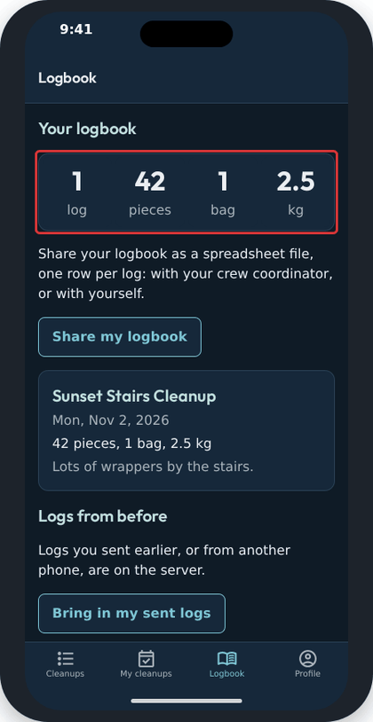

🎞️ Lesson 7.1: Animation with Reanimated 4
Theo finishes a cleanup, sends his debris log and opens his logbook. The numbers could simply change: 42 pieces becomes 44, and he may not even notice. Or they could count up in front of him, the new log landing in the season's total like a bag dropped on the pile. Motion like that is not decoration: it tells him what just happened and where to look. Today Shoreline Crew starts to move, with the animation library Expo puts in every new app, and with the same restraint as last lesson's haptics: motion that explains, and steps aside for people who turn it off.
🎯 Learning Objectives
By the end of this lesson, you will be able to:
- Explain why phone animations run on the UI thread, and what shared values and worklets do about it
- Animate with shared values:
useSharedValue,useAnimatedStyle,withTiming,withSpringandwithSequence, read and written withget()andset() - Hand a value from the UI thread back to React with
useAnimatedReactionandscheduleOnRN, without drawing the screen 60 times a second - Use Reanimated 4's CSS-style transitions and keyframe animations, and choose between them and shared values
- Respect the phone's Reduce Motion setting: know what Reanimated does about it by itself, and what it leaves to you
📦 Code for this lesson
Starting code: lesson-25-start.zip · Finished code: lesson-25-end.zip. Each folder has a README with the commands to run it.
In This Lesson
👋 Welcome: Motion That Explains
If you did last lesson's "Before the Next Lesson" task, you watched an app you like for movement. You probably found two kinds. Some motion helps you follow what happened: a message slides up from where you typed it, a deleted email folds away, a badge's number ticks over. Some only slows you down: a splash animation you have seen a hundred times, a list that bounces in every time you open it. Good apps have plenty of the first kind and almost none of the second.
In the web course you animated with CSS (transition, @keyframes) and let the browser do the work. A phone has no CSS engine, and React Native's answer has a famous trap: if the JavaScript that drives an animation is busy (fetching, parsing, drawing a list), the animation stutters. Reanimated, the library every new Expo app already includes, solves that by running animations on the thread that draws the screen. Its version 4 also brings back a little of the web: CSS-style transitions and keyframe animations, written in a style object. By the end of the lesson:
- The logbook has a season tally. Four numbers (logs, pieces, bags, kilograms) in a row under Your logbook, in place of last lesson's totals sentence.
- They count. When a saved log reaches the logbook, each number counts up from what you saw before to the new total, gives a small bounce when it gets there, and its background lights up while it counts.
- They step aside. With Reduce Motion turned on (iPhone) or animations removed (Android), the numbers simply show their totals: the information is the same, only the movement is gone.
Why it matters for your work: "make it feel smooth" lands on every mobile developer's desk, and it is where cross-platform apps are judged most harshly. Knowing which thread an animation runs on is the difference between an app that glides and one that hiccups every time data arrives, and it is a favorite interview question for React Native roles. Knowing when not to animate is the part that gets you trusted with a design system.
🌱 Judge motion with your eyes, then with numbers
Animation is the first topic in this course where "it type-checks" says almost nothing. You will watch the tally count in the web preview and on your phone, change a duration and watch again, and turn a spring's bounce up until it looks silly. That is not wasted time: it is how motion gets designed. When something looks off and you cannot say why yet, slow it down (Step 5 shows how) and look frame by frame.
🧵 Two Threads, One Frame
A phone redraws its screen 60 times a second, and many newer phones 90 or 120 times (Apple calls it ProMotion). At 60, every frame has about 16.7 milliseconds; at 120, about 8.3. Lesson 1.1 showed the two worlds inside your app, your JavaScript and the platform's native code. For motion, what matters is that each runs on its own thread:
- The JavaScript thread runs your React code: components, Hooks, TanStack Query, the queue sender, JSON parsing, React drawing a list. When it is busy, it is busy.
- The UI thread (the main thread) lays out and draws the native views, and reads touches.
The obvious way to animate in React is state: change a number 60 times a second with setState and let React draw each frame. On a phone that means every frame needs the JavaScript thread, React's comparison of the old and new screen, and a trip to the UI thread. If, in the middle of the count, TanStack Query is parsing a long answer, frames are late and the motion stutters: the animation is only as smooth as the busiest thing your JavaScript does.
Reanimated moves the animation itself to the UI thread. React says once what should happen ("count from 42 to 44 in 900 ms"), and the UI thread works out every frame on its own, with no React and no trip across. For that it needs two things:
- Shared values: numbers (or strings, colors, objects) that both threads can see. The UI thread reads and writes them every frame; your component reads and writes them when it needs to.
- Worklets: small JavaScript functions that can run on the UI thread, in a separate JavaScript runtime there. You rarely write the word: the functions you pass to
useAnimatedStyle,useAnimatedReactionand the animation callbacks are turned into worklets for you by a Babel plugin that Expo's Babel preset adds automatically (read inbabel-preset-expo: "Automatically add worklets or reanimated plugin when package is installed"). A worklet can only call other worklets; to run ordinary JavaScript, such as a React state setter, it schedules it on the JavaScript thread.
Read it top to bottom: React starts the animation once by setting a shared value. From then on the UI thread moves it every frame; an animated style (the bounce) goes straight to the native view with no React at all; and when the number reaches a new whole step, a reaction sends that one step back to React, which draws the text. You will build exactly this.
💡 Mental model: the skipper and the helm
On the crew's boat, the skipper decides "take us to the buoy off Seal Rock" and goes back to the chart. The person at the helm makes the hundred small corrections that get the boat there through the swell, without asking the skipper about each one. React is the skipper: it decides where an animation should end up and how (a duration, a spring), once. The UI thread is at the helm, frame by frame. When the skipper has to know something on the way ("we passed the reef"), the helm calls it out: that is scheduleOnRN, and it should be rare.
🧩 Version note: Reanimated 4 and react-native-worklets
Reanimated 4 runs only on React Native's New Architecture (SDK 58 has nothing else), and the worklet machinery moved out into its own package, react-native-worklets: that is where scheduleOnRN comes from. Older tutorials (Reanimated 2 and 3) tell you to add 'react-native-reanimated/plugin' to babel.config.js, use runOnJS, and write .value; Expo's preset now adds the worklets plugin for you (your project has no babel.config.js at all), runOnJS still exists but scheduleOnRN is its replacement, and get()/set() suit the React Compiler (see Common Mistakes). Reanimated 4 also changed the default spring (next sections) and added CSS-style animations.
⏱️ Timing and Springs
Reanimated has two main ways to get from here to there, plus helpers to chain them:
import { Easing, withSpring, withTiming } from 'react-native-reanimated';
// Timing: how long, and the shape of the curve
withTiming(1, { duration: 300, easing: Easing.out(Easing.cubic) });
// Spring, by feel: about how long, and how much it bounces (1 = no bounce)
withSpring(1, { duration: 500, dampingRatio: 0.35 });
// Spring, by physics: how heavy, how stiff, how much friction
withSpring(1, { mass: 1, stiffness: 100, damping: 10 });withTiming | withSpring | |
|---|---|---|
| You choose | A duration and an easing curve | How it should feel: a duration and a dampingRatio, or the physics (mass, stiffness, damping) |
| It ends | Exactly on time, exactly at the target | When the spring settles; with a dampingRatio below 1 it overshoots first |
| Good for | Values that must never pass their target: a number, a progress bar, an opacity | Things that move like objects: a card snapping into place, a scale "bounce", a sheet you let go of (Lesson 7.2's gestures) |
| If interrupted | A new animation starts from wherever the value is now (a spring even keeps its speed), so a change in the middle never jumps | |
- Easing:
Easing.out(Easing.cubic)starts fast and slows down at the end, which is how things arrive in the real world;Easing.linearmoves at one speed and looks mechanical;Easing.inOut(…)suits something that leaves and arrives on screen. - The default spring changed in Reanimated 4. Its source sets the default to a "gentle" spring (mass 4, stiffness 900, damping 120) that settles without overshooting; Reanimated 3's default (mass 1, stiffness 100, damping 10) bounced. An old tutorial's
withSpring(42)behaves differently today, and the course measured what that bouncy spring does to a number (Common Mistakes). - Chains:
withSequence(a, b)runs animations one after the other;withDelay(ms, a)waits first;withRepeat(a, times)repeats. The tally's bounce iswithSequence(withTiming(1.2, …), withSpring(1, …)): grow quickly, then spring back. - The callback: every animation function takes a last argument, a function called with
finishedwhen it stops:trueif it got to the end,falseif something interrupted it. It is a worklet, on the UI thread.
🎨 CSS-Style Transitions and Animations
Reanimated 4's headline feature will look familiar from the web course: on an Animated component, a style can say how it should change. A transition animates a style property whenever React gives it a new value:
import { StyleSheet, View } from 'react-native';
import Animated from 'react-native-reanimated';
// How full a cleanup is. When taken changes, the bar slides to its new width by itself.
export function SpotsBar({ taken, capacity }: { taken: number; capacity: number }) {
return (
<View style={styles.track}>
<Animated.View style={[styles.fill, { width: `${(100 * taken) / capacity}%` }]} />
</View>
);
}
const styles = StyleSheet.create({
track: { height: 8, borderRadius: 4, backgroundColor: '#bfe3df' },
fill: {
height: 8,
borderRadius: 4,
backgroundColor: '#1f6f8b',
transitionProperty: 'width',
transitionDuration: 400,
transitionTimingFunction: 'ease-out',
},
});No shared value, no Hook: React draws the bar with a new width, and transitionProperty, transitionDuration and transitionTimingFunction (the same names as CSS, in camelCase, durations in milliseconds or as '400ms') make it slide there. A keyframe animation runs by itself, as long as the style holds it:
import { StyleSheet } from 'react-native';
import Animated, { useReducedMotion } from 'react-native-reanimated';
// A dot that breathes while logs are being sent: a CSS-style animation with keyframes
const breathe = {
from: { opacity: 1 },
to: { opacity: 0.3 },
};
export function SendingDot() {
const reduceMotion = useReducedMotion(); // the phone's Reduce Motion, read when the app started
return <Animated.View style={[styles.dot, !reduceMotion && styles.breathing]} />;
}
const styles = StyleSheet.create({
dot: { width: 12, height: 12, borderRadius: 6, backgroundColor: '#1f6f8b' },
breathing: {
animationName: breathe,
animationDuration: '800ms',
animationIterationCount: 'infinite',
animationDirection: 'alternate',
},
});animationName takes the keyframes object itself (not a name, unlike CSS), with from/to or percentages; animationDuration, animationIterationCount and animationDirection work as in CSS. Remove the style and the animation stops. (Ignore useReducedMotion for a moment: it is the next section's subject.)
In the web preview, Reanimated turns these into real CSS (measured: the tally you build today renders with transition-property: background-color; transition-duration: 300ms on its element). On a phone, Reanimated runs them on the UI thread with its own engine, from the same style.
| Use… | When | Shoreline Crew |
|---|---|---|
| A CSS-style transition | A style changes because state changed, and it should glide instead of jump | The tally's background while it counts; a spots bar (Exercise idea) |
| A CSS-style keyframe animation | Something should loop or play by itself while a state lasts | A "sending" dot (Exercise 2) |
Shared values + withTiming/withSpring | The value is not a style (a number to show), it must chain or react when it ends, or it follows a finger (Lesson 7.2) | The count itself and its bounce |
| Layout animations, Lottie | Things appearing, leaving or moving in a list; illustrated animations | Lesson 7.3 |
🧘 When Motion Should Step Aside
For some people, movement on a screen is not a nicety: zooming, sliding and bouncing can bring on dizziness or nausea (vestibular disorders), or make a screen hard to follow. Both phones have a setting for it, and so do desktop systems, which browsers pass on as the CSS media feature prefers-reduced-motion:
| Where | Setting |
|---|---|
| iPhone | Settings > Accessibility > Motion > Reduce Motion |
| Android | Settings > Accessibility > Remove animations (names vary by maker; on some phones it is under Color and motion, or Visibility enhancements) |
| Web preview (Chrome) | DevTools, ⋮ > More tools > Rendering, "Emulate CSS media feature prefers-reduced-motion" set to reduce (or your computer's own setting) |
What does Reanimated do about it? The course measured it in the web preview with Chromium's reduced-motion setting on and off, using the snippets above:
| Animation | Reduce Motion off | Reduce Motion on |
|---|---|---|
withTiming, withSpring, withSequence (FadeIn, the tally) | Animates | Jumps to the end: FadeIn's opacity was 1 at the first sample; the tally showed its total at once, with no bounce |
| CSS-style transition (SpotsBar) | Slides in 400 ms | Still slides, the same 400 ms |
| CSS-style keyframe animation (SendingDot without its check) | Breathes forever | Still breathes |
- Every animation function takes a
reduceMotionoption whose default isReduceMotion.System: follow the phone.ReduceMotion.AlwaysandReduceMotion.Neveroverride it for one animation. That is why the tally needs no extra code for its count and bounce. - The CSS-style transitions and animations do not look at the setting in the web preview (measured), and the course found no Reduce Motion check for them in Reanimated's iPhone code; on Android, some of them follow the system's animation speed. Do not count on either:
useReducedMotion()tells you whether the setting was on, and you decide, asSendingDotdoes: no breathing. - "When the app started." Reading Reanimated's code, both the default and
useReducedMotion()read the setting once, when the app starts; its documentation says changing the setting "doesn't cause your components to rerender". After changing it, restart the app (or reload the web preview). Lesson 7.3 makes Shoreline Crew follow the setting live, and decides whether the app needs its own switch, like last lesson's vibration switch.
Reduced motion does not mean no change at all. Apple's guidelines suggest replacing movement with gentler effects such as a dissolve; a color that fades in place, like the tally's background, is that kind of effect, so the tally keeps its CSS transition. It is the counting and the bounce that go, and Reanimated already takes care of those.
📱 On your phone
Per Reanimated's code, the phone tells it about Reduce Motion (iPhone) or Remove animations (Android) as the app starts, in Expo Go too. The course could not run a phone or an emulator: Step 7 has you turn the setting on, restart Shoreline Crew, and check that the tally shows its totals at once. On Android, Reanimated's code treats the system's transition animation scale at 0 (which Remove animations sets) as "reduce motion"; the setting also turns off the system's own animations, such as screen transitions.
⚠️ Common Mistakes
Each of these was made on purpose in a copy of the finished project. The first was caught by npx expo lint; the others were measured in the web preview, except where only a phone can show the result.
⚠️ Writing .value with the React Compiler on
Most Reanimated examples you will find write count.value = withTiming(…) and read count.value. Reanimated 4 still supports it, but your project has the React Compiler switched on (Lesson 1.2's app.json: reactCompiler), and its lint rules see a Hook's return value being changed:
Expected output
env: load .env.local
env: export EXPO_PUBLIC_API_URL
~/shoreline/shoreline-crew/src/components/Tally.tsx
63:7 error Error: This value cannot be modified
This modifies a variable that React considers immutable.
~/shoreline/shoreline-crew/src/components/Tally.tsx:63:7
61 | reduceMotion: ReduceMotion.System, // the default, written out: Reduce Motion on = jump to the end
62 | };
> 63 | count.value = withTiming(value, counted, (finished) => {
| ^^^^^ `count` cannot be modified
64 | // Runs on the UI thread when the count stops (finished is false if something interrupted it)
65 | if (finished) {
66 | scheduleOnRN(setCounting, false); react-hooks/immutability
✖ 1 problem (1 error, 0 warnings)The compiler is right to worry: it assumes whatever a Hook returns does not change, and may skip work based on that. count.set(…) and count.get() do the same thing as a method call, which the compiler leaves alone, and Reanimated's documentation recommends them for code the compiler handles. Use them everywhere, including inside worklets, so there is one way to do it.
⚠️ Calling a React setter straight from a worklet
Inside useAnimatedReaction, setShown(step / steps) looks simpler than scheduleOnRN(setShown, step / steps). Measured: in the web preview it works perfectly, the tally counts as usual, and tsc and expo lint say nothing. That is the trap. The web preview has no separate UI thread (Reanimated runs worklets on the page's one JavaScript thread), so it cannot show a thread mistake. On a phone, the reaction runs on the UI thread, where React's setter does not exist, and per react-native-worklets' code the app stops with a red screen saying:
Expected output (on a phone, from the library's code)
[Worklets] Tried to synchronously call a Remote Function. Called "…" on the UI Runtime.Anything that is not a worklet (state setters, feel(), your API client) goes through scheduleOnRN. Testing animations only in the web preview is like testing haptics there: the code runs, the real thing happens on a phone.
⚠️ A bouncy spring for a number
A spring feels alive, so why not count with one? Measured with the count changed to withSpring(value, { mass: 1, stiffness: 100, damping: 10 }) (Reanimated 3's old default, still in many tutorials), sampling the pieces tally every few milliseconds:
Expected output (pieces shown, in order)
0 3 8 12 19 27 30 37 42 44 47 48 49 48 47 46 45 44 43 42 41 42The logbook claimed 49 pieces, then 41, before settling on 42 two seconds later: a spring overshoots its target, and for a number that means showing totals that were never true. Springs are for things that move like objects (the bounce); numbers, progress bars and anything that must not pass its target get withTiming.
⚠️ Expecting CSS-style animations to respect Reduce Motion
After seeing withTiming jump to the end with Reduce Motion on, it is natural to assume the CSS-style ones do too. Measured in Chromium with reduced motion on: a 400 ms width transition still took 400 ms, and an infinite keyframe animation kept looping. If a CSS-style animation moves, zooms or loops, check useReducedMotion() yourself and leave it out (or swap it for a fade) when it is true.
🛠️ Project: A Tally That Counts
You check what the template already installed, build one Tally component that uses everything above, put four of them in the logbook, then watch, tune and test the motion: with Reduce Motion off and on, in the web preview and on your phone.
Step 1: Reanimated is already here (5 min)
Nothing to install today. The project you created in Lesson 1.2 came with both packages, at the versions SDK 58 expects:
"react-native-reanimated": "4.7.1",
...
"react-native-worklets": "0.13.0",Check that npm agrees, in the shoreline-crew folder:
npm ls react-native-reanimated react-native-workletsExpected output
shoreline-crew@1.0.0 ~/shoreline/shoreline-crew
├─┬ @expo/ui@58.0.28
│ └── react-native-worklets@0.13.0 deduped
├─┬ expo-router@58.0.31
│ ├─┬ react-native-drawer-layout@4.2.12
│ │ └── react-native-reanimated@4.7.1 deduped
│ ├── react-native-reanimated@4.7.1 deduped
│ └── react-native-worklets@0.13.0 deduped
├─┬ expo@58.0.25
│ └─┬ expo-modules-core@58.1.0
│ └── react-native-worklets@0.13.0 deduped
├─┬ react-native-reanimated@4.7.1
│ └── react-native-worklets@0.13.0 deduped
└── react-native-worklets@0.13.0The last two lines are your own dependencies. The rest shows who else uses them: Expo Router, Expo's UI package and Expo's core modules use Reanimated or the worklets too, and Reanimated itself depends on react-native-worklets. deduped means they all share your one copy, which is what you want: two copies of a library with native code can clash. There is no babel.config.js to edit: Expo's Babel preset adds the worklets plugin when it finds the package. Both are part of Expo Go's native code, so no development build is needed either.
Step 2: The Tally component (20 min)
Create src/components/Tally.tsx. It is the longest file today, and every part of it is one of the ideas above:
import { useFocusEffect } from 'expo-router';
import { useCallback, useState } from 'react';
import { StyleSheet } from 'react-native';
import Animated, {
Easing,
ReduceMotion,
useAnimatedReaction,
useAnimatedStyle,
useSharedValue,
withSequence,
withSpring,
withTiming,
} from 'react-native-reanimated';
import { scheduleOnRN } from 'react-native-worklets';
import { AppText } from '@/components/AppText';
import { createThemedStyles } from '@/hooks/useTheme';
import { radius, spacing } from '@/theme/spacing';
type TallyProps = {
/** The number to show. When it changes, the tally counts up (or down) to it. */
value: number;
/** What is counted, after the number: "pieces" */
label: string;
/** Digits after the decimal point: 1 for kilograms */
decimals?: number;
};
// A number that counts to its value while the screen is in view, then gives a small bounce
export function Tally({ value, label, decimals = 0 }: TallyProps) {
const steps = 10 ** decimals; // 10 steps per kilogram, 1 per piece
// Shared values live on the UI thread. The count starts at 0, so opening the logbook counts up once.
const count = useSharedValue(0);
const scale = useSharedValue(1);
// The number the Text shows. React draws again only when it reaches the next step.
const [shown, setShown] = useState(0);
// True while counting: the tally's background lights up, with a CSS-style transition
const [counting, setCounting] = useState(false);
const styles = useStyles();
// On the UI thread, every frame: has the count reached a new step? Then tell React (JS thread).
useAnimatedReaction(
() => Math.round(count.get() * steps),
(step, previous) => {
if (step !== previous) {
scheduleOnRN(setShown, step / steps);
}
},
);
// Count when the screen comes into view, and when the value changes while it is in view
useFocusEffect(
useCallback(() => {
if (count.get() === value) {
return;
}
setCounting(true);
const counted = {
duration: 900,
easing: Easing.out(Easing.cubic), // fast at first, slowing down at the end
reduceMotion: ReduceMotion.System, // the default, written out: Reduce Motion on = jump to the end
};
count.set(
withTiming(value, counted, (finished) => {
// Runs on the UI thread when the count stops (finished is false if something interrupted it)
if (finished) {
scheduleOnRN(setCounting, false);
// A bounce: grow quickly, then spring back. dampingRatio below 1 lets it overshoot a little.
scale.set(
withSequence(
withTiming(1.2, { duration: 120 }),
withSpring(1, { dampingRatio: 0.35, duration: 500 }),
),
);
}
}),
);
}, [count, scale, value]),
);
const bounce = useAnimatedStyle(() => ({ transform: [{ scale: scale.get() }] }));
return (
// A screen reader hears the final number once, not every step on the way
<Animated.View
style={[styles.tally, counting && styles.counting]}
accessible
accessibilityLabel={`${value} ${label}`}
>
<Animated.View style={bounce}>
<AppText variant="title">{shown}</AppText>
</Animated.View>
<AppText variant="muted">{label}</AppText>
</Animated.View>
);
}
const useStyles = createThemedStyles(({ colors }) => StyleSheet.create({
tally: {
flex: 1,
alignItems: 'center',
gap: spacing.xs,
paddingVertical: spacing.sm,
borderRadius: radius.control,
backgroundColor: colors.surface,
// CSS-style: when the background changes, fade between the two colors
transitionProperty: 'backgroundColor',
transitionDuration: 300,
},
counting: {
backgroundColor: colors.pressed,
},
}));- Two shared values.
countis the number on its way, starting at 0, so a tally that appears counts up once;scaleis the bounce, resting at 1. - The number goes back to React in steps. Text content is not a style, so
useAnimatedStylecannot show it. The reaction rounds the count to whole steps (10 per kilogram withdecimals={1}) and callsscheduleOnRN(setShown, …)only when the step changes: counting to 42 pieces draws the component about 42 times, not once per frame.step / stepsturns 25 back into 2.5. useFocusEffect(Lesson 4.3) starts the count when the Logbook tab comes into view, and again whenevervaluechanges while it is in view. A tab the volunteer is not looking at does not count; it counts when they come back, so they see it. If the count is already at the value, nothing happens.- The count is a
withTimingof 900 ms that slows down at the end.reduceMotion: ReduceMotion.Systemis Reanimated's default, written out so the next person reading the file knows Reduce Motion was thought about. - The callback runs on the UI thread when the count stops. If it finished (not interrupted by a newer count), it tells React the counting is over and starts the bounce:
withSequenceof a 120 ms grow and a spring back withdampingRatio: 0.35, which overshoots a little below 1 and settles. - The highlight is a CSS-style transition:
styles.countingchanges the background whilecountingis true, andtransitionProperty/transitionDurationin the base style make it fade in and out over 300 ms. React decides when; Reanimated does the fading. - Accessibility. The whole tally is one
accessibleelement labeled with the final value ("42 pieces"), so VoiceOver and TalkBack read it once, as a whole, instead of the number and the word separately or a number that is still counting.
Step 3: Four tallies in the logbook (10 min)
In src/app/(tabs)/logbook.tsx, the totals sentence from Lesson 5.3 becomes a row of tallies. The kilogram rounding moves into a small function, because both the tally and amounts() need it:
import { ShareLogbook } from '@/components/ShareLogbook';
+import { Tally } from '@/components/Tally';
import { useSession } from '@/hooks/useSession';
// ...
) : (
- <AppText>
- {totals.logs} {totals.logs === 1 ? 'log' : 'logs'} in all: {amounts(totals)}.
- </AppText>
+ <View style={styles.tallies}>
+ <Tally value={totals.logs} label={totals.logs === 1 ? 'log' : 'logs'} />
+ <Tally value={totals.pieces} label={totals.pieces === 1 ? 'piece' : 'pieces'} />
+ <Tally value={totals.bags} label={totals.bags === 1 ? 'bag' : 'bags'} />
+ <Tally value={tenths(totals.weightKg)} label="kg" decimals={1} />
+ </View>
)}
// ...
function amounts({ pieces, bags, weightKg }: Pick<LogbookTotals, 'pieces' | 'bags' | 'weightKg'>) {
- const weight = Math.round(weightKg * 10) / 10; // sums of decimals can end in ...0000001
+ const weight = tenths(weightKg);
const words = [pieces === 1 ? 'piece' : 'pieces', bags === 1 ? 'bag' : 'bags'];
// ...
+// Kilograms to one decimal: sums of decimals can end in ...0000001
+function tenths(kg: number) {
+ return Math.round(kg * 10) / 10;
+}
+
const useStyles = createThemedStyles(({ colors }) => StyleSheet.create({
+ tallies: {
+ flexDirection: 'row',
+ gap: spacing.xs,
+ padding: spacing.xs,
+ borderWidth: 1,
+ borderColor: colors.border,
+ borderRadius: radius.card,
+ backgroundColor: colors.surface,
+ },
card: {- The row is a card of its own (
styles.tallies), each tally taking an equal share of the width withflex: 1(Lesson 2.2). Four short numbers fit side by side on the narrowest phones; a total with five digits would still fit. - The words follow the totals, as before ("1 bag", "2 bags"). They are decided from the final value, so during a count from 0 to 1 the label already says "bag".
tenths()rounds before the tally sees the weight, so the label says "2.5 kg", never "2.5000000000000004 kg".
Step 4: Watch it count (10 min)
Start shoreline-api in one terminal and npx expo start in another, then open the web preview (w):
- Sign in as
theo.nakamura@example.com(passwordshoreline-demo), open the Logbook tab and press Bring in my sent logs. The tallies appear and count up to 1 log, 42 pieces, 1 bag and 2.5 kg, lit up while they count, each with a small bounce at the end. (If your logbook kept Sunset Stairs from last lesson, the tallies count as soon as the tab opens.) - Open the Cleanups tab, then today's Tide Pool Morning Cleanup, and Log what you collected: two glass, 0.8 kg, Send the log. On "Log sent. Thank you!", press Open my logbook: the tallies count on from where they were, to 2 logs, 44 pieces and 3.3 kg (measured). The bags tally stays still: its value did not change.

The second case is the one this lesson was built for: the log was saved, then the logbook was looked at, and the tally shows the difference. If the logbook tab was already open when the queue sent a waiting log (Send now, Lesson 5.5), the count runs right there.

Step 5: Try the knobs (10 min)
Motion is tuned by eye. Make each change in Tally.tsx and save. A tally that already shows its total has nothing to count, so reload (press r in the terminal running Metro, or reload the browser tab and sign in again) and open the Logbook tab: fresh tallies count up from 0. Then put the line back.
duration: 3000: now you can see the easing. The numbers race at first and crawl at the end; that slowing down is what makes an arrival look natural. TryEasing.linearat 3000 too: it looks like a machine.- In the bounce,
dampingRatio: 1: no overshoot, a soft settle. Then0.15: a wobble that goes on too long. 0.35 is a choice, not a rule; pick one you like and keep it the same everywhere. - Replace the count's
withTiming(value, counted, …)withwithSpring(value, { mass: 1, stiffness: 100, damping: 10 }, …)and watch the pieces overshoot (Common Mistakes). PutwithTimingback.
A rule of thumb, in line with Material Design's motion durations (from about 50 ms for the smallest changes to about a second for the largest): a highlight or a bounce takes 100 to 300 ms; a number counting or something crossing the screen, up to about a second. Longer, and people wait for your app instead of using it.
Step 6: With Reduce Motion on (10 min)
In Chrome, open DevTools (F12, or ⌥ Option+⌘ Cmd+I on a Mac), then ⋮ > More tools > Rendering, and set "Emulate CSS media feature prefers-reduced-motion" to reduce. Reanimated reads the setting when the app starts, so reload the page (and sign in again: the web preview keeps no session after a reload, Lesson 4.3).
- Logbook, Bring in my sent logs: the totals appear at once. No counting, no bounce, and the highlight has no time to show, because the count ends in the same moment it starts.
- Set the emulation back to "No emulation" and reload: the count is back.
This course's checks do the same in Chromium: with reduced motion on, the pieces tally showed 0 and then 42, nothing in between; without it, many steps ending at 42. You changed no code for this: the count and the bounce use Reanimated's animation functions, which follow the setting by default. Lesson 7.3 goes further (the setting followed live, Lottie, layout animations).
Step 7: Check it, then watch it on your phone (10 min)
Run npx tsc --noEmit and npx expo lint: both should print nothing but the env: lines. Then in Expo Go (with your computer's address in .env.local, Lesson 5.1):
- Logbook, Bring in my sent logs: the tallies count and bounce. On a phone the motion runs on the UI thread, so it should stay smooth even while the logbook loads.
- Send a debris log, then Open my logbook: the count from the old totals to the new ones.
- Turn on Reduce Motion (iPhone: Settings > Accessibility > Motion > Reduce Motion; Android: Settings > Accessibility > Remove animations, names vary), close Expo Go completely and open the app again: the totals should appear without counting. Turn it back off and restart again.
- With VoiceOver or TalkBack on, move to a tally: it should read "42 pieces" once.
If your phone shows something different (a stutter, a bounce with Reduce Motion on), note the model and the system version: animation is where phones differ, and that note is the start of a good bug report.
✅ Project Completion Checklist
package.jsonlists react-native-reanimated 4.7 and react-native-worklets 0.13, and there is no Babel plugin to addsrc/components/Tally.tsxcounts withwithTiming, bounces withwithSequenceandwithSpring, hands whole steps to React withuseAnimatedReactionandscheduleOnRN, and lights up with a CSS-style transition- The Logbook shows four tallies (logs, pieces, bags, kg) that count from what you last saw to the new totals when a log reaches the logbook
- With reduced motion on (Chrome's emulation or your phone's setting, after a restart), the totals appear at once
- Each tally is read once, with its final value, by a screen reader
npx tsc --noEmitandnpx expo lintpass
Your own app: find the one change in your final project's app that people most need to notice (a total, a status, a new item) and sketch the motion that would explain it in under a second. Then write down what it should do with Reduce Motion on.
🏋️ Hands-on Exercises
Optional, but recommended: each one takes five to fifteen minutes. Undo code changes afterwards; the next lesson starts from the project as Step 7 left it.
🏋️ Exercise 1: What does the tally do?
Theo's logbook shows 1 log, 42 pieces, 1 bag, 2.5 kg, and the count is over. Without running anything, say what the pieces tally does in each case:
- He opens the Profile tab and comes back to the Logbook.
- He is looking at the Logbook when the queue sends a waiting log of 2 pieces (Lesson 5.5).
- The same log is sent while he is on the Cleanups tab; a minute later he opens the Logbook.
- He turns on Reduce Motion, restarts the app and opens the Logbook.
- He signs out, and Maya signs in on the same phone and opens the Logbook.
💡 Hint
Three questions settle each case: is the Logbook in view (useFocusEffect)? Did value change since the count was last at it? Was the Tally just created (its count starts at 0)?
✅ Solution
(1) Nothing: the focus effect runs, finds the count already at 42 and returns. (2) It counts from 42 to 44 at once: the logbook query is invalidated, the totals change while the tab is in view, and the effect runs again with the new value. (3) Nothing while he is away; when he opens the Logbook, it counts from 42 to 44, so he sees the change. (4) A restarted app creates new tallies, which start at 0: with Reduce Motion on, withTiming jumps to the end, so he sees 42 at once, with no bounce. (5) Signing out unmounts MyLogbook (Lesson 5.3's reason for a separate component), so Maya gets new tallies that count from 0 to her own totals, or the "Your logbook is empty" text if she has none. Theo's numbers never flash on her screen.
🏋️ Exercise 2: A dot that breathes while sending
The Logbook says "Sending…" while the queue sends waiting logs. Put a small dot that breathes (fades in and out) next to those words, with a CSS-style keyframe animation, in the app's action color, and make it hold still for people who reduce motion. It is decoration, so screen readers should skip it.
💡 Hint
Start from SendingDot in CSS-Style Transitions and Animations. createThemedStyles (Lesson 2.5) gives you the color; accessibilityElementsHidden (iPhone) and importantForAccessibility="no" (Android) hide a view from screen readers. The dot and the words need a row (flexDirection: 'row').
✅ Solution
src/components/SendingDot.tsx:
import { StyleSheet } from 'react-native';
import Animated, { useReducedMotion } from 'react-native-reanimated';
import { createThemedStyles } from '@/hooks/useTheme';
// Breathes while the queue is sending; holds still for people who reduce motion
const breathe = {
from: { opacity: 1 },
to: { opacity: 0.3 },
};
export function SendingDot() {
const reduceMotion = useReducedMotion();
const styles = useStyles();
return (
<Animated.View
style={[styles.dot, !reduceMotion && styles.breathing]}
accessibilityElementsHidden
importantForAccessibility="no"
/>
);
}
const useStyles = createThemedStyles(({ colors }) => StyleSheet.create({
dot: { width: 12, height: 12, borderRadius: 6, backgroundColor: colors.action },
breathing: {
animationName: breathe,
animationDuration: '800ms',
animationIterationCount: 'infinite',
animationDirection: 'alternate',
},
}));In logbook.tsx, wrap the live line in <View style={styles.sendingRow}> (a row with alignItems: 'center' and a small gap) and put {sending && <SendingDot />} before the text. When sending turns false, the dot leaves with its style, and the animation stops. With Reduce Motion on, the dot is still there (a still dot still says "something is going on"); it just does not move.
🏋️ Exercise 3: A count that fits the change (Stretch)
Counting from 0 to 3 bags takes 900 ms, and so does counting from 0 to 1,250 pieces at the end of a busy season. Make the duration depend on the size of the change: quick for small changes, never longer than 1.2 seconds. Watch both kinds in the web preview.
💡 Hint
Before the count starts, count.get() is where it is now and value is where it is going. A small pure function of the two is easy to test later (Lesson 8.2).
✅ Solution
// How long to count: quick for a small change, never more than 1.2 seconds
export function countDuration(from: number, to: number): number {
return Math.min(1200, 300 + 15 * Math.abs(to - from));
}In Tally, use duration: countDuration(count.get(), value) in counted. A change of 1 takes 315 ms, a change of 42 takes 930 ms, and anything above 60 takes 1.2 seconds. Compare in "steps" instead if you want kilograms to behave like pieces: countDuration(count.get() * steps, value * steps).
🎯 Quick Quiz
🎯 Check Your Understanding
Question 1: Why does the tally's count run on the UI thread instead of changing React state every frame?
Question 2: In Tally, why does the reaction call scheduleOnRN(setShown, …) only when the rounded step changes?
Question 3: Maya has Reduce Motion on and restarted Shoreline Crew. She opens her Logbook, which holds 3 logs. What does the pieces tally do?
Question 4: The cleanup screen should get a bar showing how full a cleanup is, and the bar should glide to its new width after a sign-up. What is the simplest fitting tool?
Question 5: A teammate calls setShown(step) directly inside useAnimatedReaction. tsc, lint and the web preview are all fine. What happens on a phone?
❓ Common Questions at This Stage
React Native has its own Animated API. Why not use that?
React Native's built-in Animated is older and still works: with its native driver option, it hands transform and opacity animations to the UI thread; anything else (a number shown as text, a width, a color) is driven from JavaScript, frame by frame. It has no worklets, so it cannot run your own logic on the UI thread or react to a gesture there. You will meet it in older code and in libraries (the yellow web preview warning about the native driver in Lesson 3.2 came from FlashList's use of it). For new code, Reanimated is what the Expo template installs and what Lesson 7.2's gestures build on.
How close is the web preview to the real motion?
Close for what moves and when: the same durations, easing and springs, and the same Reduce Motion behavior for Reanimated's animation functions. Not for how smooth it is: the web preview runs worklets on the page's one JavaScript thread, so it cannot show the benefit of the UI thread, nor thread mistakes (Common Mistakes). Judge smoothness on a phone, preferably an older or cheaper one, and in a release build when it matters (development builds and Expo Go run slower JavaScript checks).
My app bundle got bigger. Is that Reanimated?
Yes. Reanimated was installed from the start, but nothing imported it until today, so Metro left it out. Measured with npx expo export: the Android bundle grew from about 4.7 MB to 5.6 MB and the iOS bundle from about 4.3 MB to 5.4 MB between Lesson 6.5's code and today's; the web bundle stayed about 1.1 MB. The native part was always in Expo Go and in any build. For an animation library used across the app, that is a normal price; Lesson 8.4 looks at what actually slows an app down.
Do animations drain the battery?
A one-second count now and then costs next to nothing. What costs is motion that never stops: an infinite keyframe animation, a spinner left running off screen. Animate while it means something (Exercise 2's dot only while sending) and stop afterwards. Phones also cut animations themselves: reading Reanimated's Android code, battery saver can switch off the system's animators, and the code accounts for it.
Why not count the tally on the web course's way, with a setInterval?
It would work, on the JavaScript thread: a timer that adds one 30 times a second and sets state. On a phone it is exactly the "only as smooth as the busiest thing" problem: the timer fires late while React or the network is busy, and the count stutters. It also knows nothing of easing, springs or Reduce Motion. Reanimated gives you all three, and the timer-free version is shorter.
🌟 Going Further: Bonus Challenge
The tally still asks React to draw about once per step. It can be done with no React drawing at all: Reanimated's useAnimatedProps sets a native component's properties from the UI thread, and a common trick (from Reanimated's community, not its core documentation) is an Animated.createAnimatedComponent(TextInput) that is not editable, whose text property is set every frame from the count. Try it in a copy of Tally, then compare: does it look different? Use React DevTools' profiler (Lesson 8.4 shows it) to count the renders in each version. Then decide whether the saving is worth a TextInput pretending to be text, and what a screen reader makes of it.
📓 Learning Journal
Take five to ten minutes and add today's entry to your journal:
- Key concepts you learned today
- Techniques that clicked (and the ones that have not, yet)
- Questions or confusion to look up or bring to the next session
- Ideas to try on your own
- Progress and feelings: how did this lesson go for you?
✍️ This lesson's prompt: Turn on Reduce Motion on your phone for a day. Which apps changed, and how: did they drop movement, swap it for fades, or ignore the setting? Was anything harder to follow without the motion? Write down one animation in Shoreline Crew you would keep with the setting on, and one you would drop.
📝 Lesson Summary
🎓 Key Takeaways
- Reanimated runs animations on the UI thread: React sets a shared value once, and the UI thread moves it frame by frame, so a busy JavaScript thread cannot make the motion stutter
- Shared values are read and written with
get()andset()(the React Compiler's lint rules reject writing.value), never while rendering;useAnimatedStyleturns them into styles without React withTimingis for values that must land exactly (numbers, bars);withSpringis for things that move like objects;withSequencechains them, and callbacks say whether an animation finished- Worklets run on the UI thread and can only call worklets; React setters and other JavaScript go through
scheduleOnRN, and only as often as the screen needs (once per visible step) - Reanimated 4's CSS-style transitions and keyframe animations live in a style; use them for style changes driven by state and for loops while a state lasts
- Reanimated's animation functions follow Reduce Motion by default (jump to the end); CSS-style ones do not, so check
useReducedMotion()for those; both read the setting when the app starts
| If you want to… | Go to |
|---|---|
| Read Reanimated's guides and every function | React Native Reanimated documentation |
| Learn the CSS-style transitions and animations in depth | Reanimated: CSS animations |
| Understand worklets and threads | React Native Worklets documentation |
| See how Expo sets Reanimated up | Expo: Reanimated |
| Read Apple's guidance on motion | Apple Human Interface Guidelines: Motion |
🏆 What You've Accomplished
- The logbook's totals count up when a log arrives, so volunteers see what their log added
- You used shared values, an animated style, a reaction, timing, a spring and a sequence in one small component
- You used Reanimated 4's CSS-style transitions and know when they beat shared values
- The tally steps aside for people who reduce motion, and you know which animations do that by themselves
- You can explain the UI thread and the JavaScript thread, and why the web preview cannot show thread mistakes
🔭 Looking Ahead
Today, React started every animation. In Lesson 7.2: Gestures, a finger does: React Native Gesture Handler reads touches on the UI thread, and the shared values you met today follow the finger frame by frame. You will add swipe to delete for a log waiting in the queue, drag something into place, and let springs finish the movement when the finger lets go.
📋 Before the Next Lesson
- Do Step 7 on your phone (the count, the restart with Reduce Motion on, a screen reader on a tally) and commit your work
- Notice gestures in the apps you use: where can you swipe a row away, drag to reorder, pull down to close? How does the app show you that a gesture is possible before you try it?
- Write today's journal entry
🌱 Encouragement for the Journey
Threads, worklets, shared values: today had more new words than code. If "the UI thread" still feels abstract, that is normal; it becomes real the first time you watch something stay smooth on a phone while data loads, or the first time a red screen tells you a setter was called on the wrong thread and you know exactly why. You now have the model that most React Native developers pick up slowly, by accident. Keep watching animations in other apps with this lesson's questions in mind; your eye for motion will grow faster than you expect.